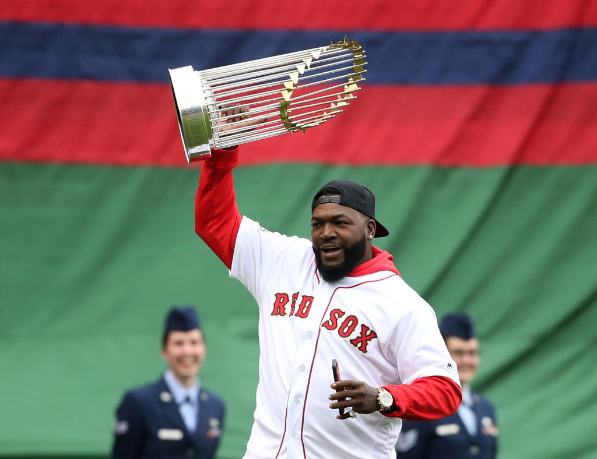

David Ortiz (Big Papi)
Started from the bottom and now he's here.

David Ortiz after winning one of his many games
David Ortiz was an MLB baseball player from the Dominicna Republic who came from a very poor background but was able to rise to be one of the top players of his time. Big papi debuted his major league carrier with the Minnesota Twins on September 1997 and was released on 2002. He then joined the Boston red sox on 2003 by recomendation of Pedro Martinez and became one of the key players to the team many victories. Ortiz retired from baseball at the end of the 2016 season.
Some of the many achivements of the big baseball star:
- Won three world series with Boston Red Sox 2004, 2007 and 2013.
- 10-time AL All-Star (2004-2008, 2010-2013 & 2016)
- Won the Hank Aaron Award on 2016(Given to the top hitter in the league)
- He was the MVP of the 2013 World Series.
- He finished his carrier with 541 home runs,which ranks 17th on the MLB all-time home run list.
For more information on David Ortiz check his wikipedia page here or watch a video of David telling his history here.